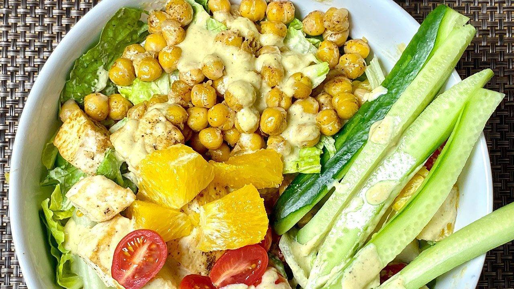

Healthy Chickpea and Tofu Salad

Description
Chickpea and tofu salad is a new favorite in our family. It is both heart healthy and delicious.
It's packed with plant protein and fiber and is also a great option for those who are vegan and gluten free.
These days everyone in my family is eating clean and will usually ask me to make a salad bowl.
This colorful and delicious salad has become part of my salad recipes. There’s nothing like a fresh salad.
Salads are of course healthy and contrary to popular belief they can be quite filling and satisfying!
This particular salad is a combination of greens, cucumber, tomatoes, and some fruit which gives it a fresh taste.
Add in some chickpeas and tofu with my special homemade dressing and you have a great meal!
It’s unbelievably tasty and nutritious too!
I love eating leftovers all week long. This super delicious salad is full of flavor and textures and is really easy to prepare.
This recipe will serve 4. It takes 20 minutes of prep time and 5 minutes to assemble
Ingredients
For Salad Dressing
- 1/4 cup fresh lemon juice
- ¼ cup roasted sesame seeds
- 2 Tbsp nutritional yeast
- ¼ cup olive oil
- ¼ tsp salt
- ¼ tsp black pepper
- 2 tsp sugar
- 1 Tbsp ginger finely shredded
- 2 Tbsp fresh orange juice
For Tofu
- 6 oz firm tofu
- ¼ tsp salt
- ¼ tsp black pepper
- 1 Tbsp ginger finely shredded
- 2 tsp lemon juice
Chickpeas
- 15 oz can of chickpea
- 1 Tbsp oil
- ¼ tsp salt
- ¼ tsp black pepper
- 1 tsp lemon juice
- 1 tsp ginger juice
Other Salad Ingredients
- 1 cup romaine lettuce roughly chopped
- ½ cup spinach leaves roughly chopped
- ¼ cup cucumber cut into bite size, I am using Asian cucumber
- ¼ cup pear cut into bite size pieces
- ½ orange peeled and cut into bite size pieces
- 8 cherry tomato cut into half
- 1 Asian cucumber thinly sliced long ways
Steps
For Dressing:
- blend all the salad dressing ingredients together, lemon juice, roasted sesame seeds, nutritional yeast, olive oil, salt, black pepper, sugar, ginger, orange juice. Dressing should be pourable consistency. Keep aside.
- Tofu: drained the water and pat dry the tofu, cut the tofu in about ½ inch cubes. Grill the tofu over medium heat. lightly oil the pan and spread the tofu pieces, grill the tofu from both sides until they are light brown. It will take about 3 minutes.
- Drizzle, lemon juice over tofu, salt and black pepper turn them lightly. Turn of the heat and take them out in a bowl.
Prepare chickpeas:
- drain the water and wash the chickpea. Sauté the chickpeas over medium heat, add oil, oil should be moderately hot add chickpeas, drizzle salt, black pepper, lemon juice and ginger. Stir them together for about 2 minutes. Chickpeas will have a nice flavor.
Assembling the salad:
- use the bowl you will serve the salad, spread lettuce, spinach leaves (remove the stems from spinach), add cucumber, pair cut, orange and tomatoes.
- Next drizzle about 2 tablespoons of dressing and toss them together. Add about 1/3 cup of chickpeas and 1/3 cup of grilled tofu on one side I am also putting few slices of cucumber, to dress it up.
- Now again drizzle about 2 tablespoons of dressing. salad is ready to serve.
- For this recipe use the chickpea, tofu, vegetables, and fruits quantity of your choice.
Reference